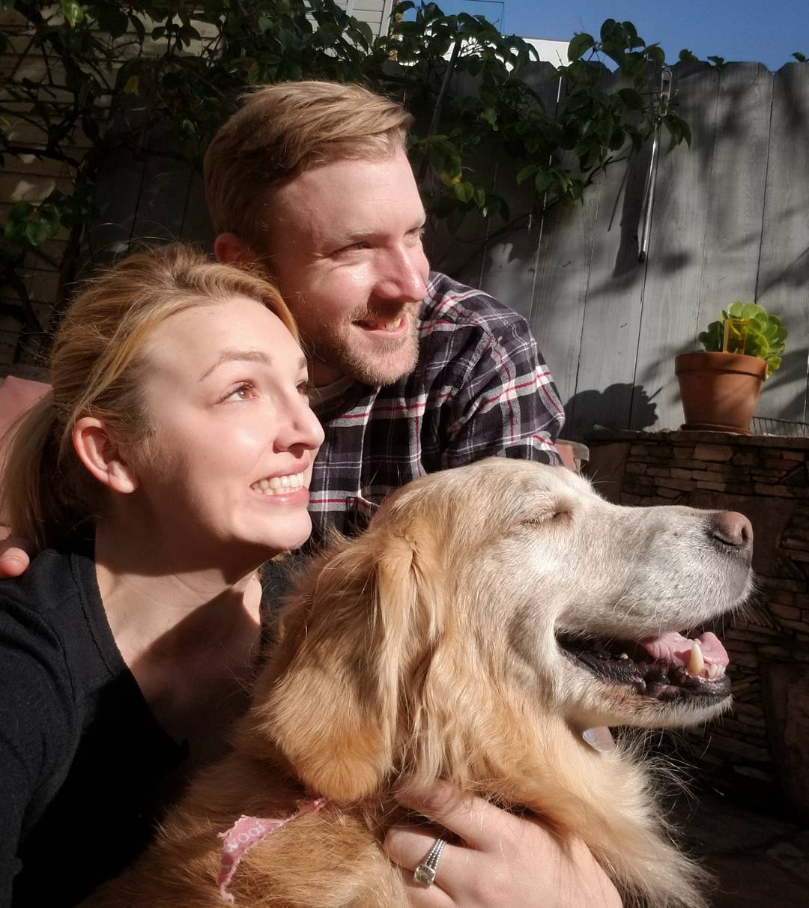

About
An Ohioan turned San Franciscan; Developer with strengths across backend and front end engineering. Often found flying his plane or on his bike when not writing high availability C backends or shipping front end changes to millions of users. Currently growing his skillset by attending the Web Development Immersive course at General Assembly after several years managing a QA Engineering team.
